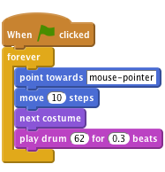
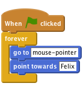
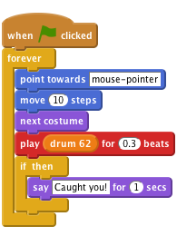
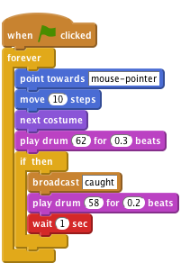
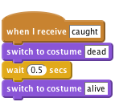
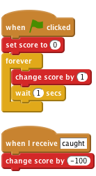

Level 1
Felix and Herbert
We are going to make a game of catch with Felix the cat and Herbert the mouse. You control Herbert with the mouse and try to avoid getting caught by Felix. The longer you avoid him the more points you score, but don’t get caught because your score will go down!

Create this script:

Click the green flag. Does Felix follow the mouse pointer? Does it look like he’s walking when he moves? Does he move at the right speed?
Next, we want Felix to chase Herbert the mouse, rather than the mouse pointer.
Make sure Herbert only points left-right. 5. Give Herbert this script:

Click the green flag.
Does Herbert move with the mouse pointer? Does Felix chase Herbert?
We want Felix to know when he’s caught Herbert, and tell us. ## Activity Checklist { .check}
Change Felix’s script to be this:

Click the green flag.
Does Felix say when he’s caught Herbert?
Instead of Felix saying something, we want Herbert to turn into a ghost when he’s caught.
Change Felix’s script to send this message when he catches Herbert.

Create a new script for Herbert to turn him into a ghost:

Click the green flag.
Does Herbert turn into a ghost when he’s caught? Does Felix play the right sounds at the right time? Does Felix still stay still for long enough for Herbert to get away
Let’s add a score so we know how well we do at keeping Herbert alive. We’ll start the score at zero and increase it by one every second. If Felix catches Herbert, we’ll reduce the score by one hundred.
On the stage, create these two scripts

Click the green flag.
Does the score go up by one every second? Does the score go down by one hundred when Herbert is caught? What happens when Herbert is caught before score reaches one hundred? Does the score go back to zero when you start a new game?
Well done you’ve finished, now you can enjoy the game! Don’t forget you can share your game with all your friends and family by clicking on Share on the menu bar